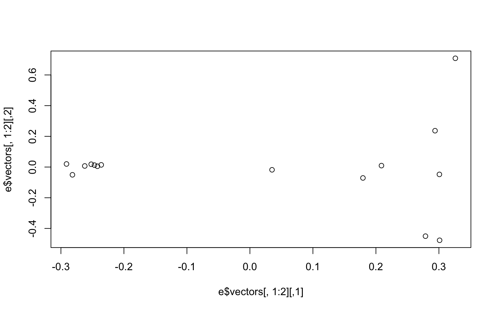
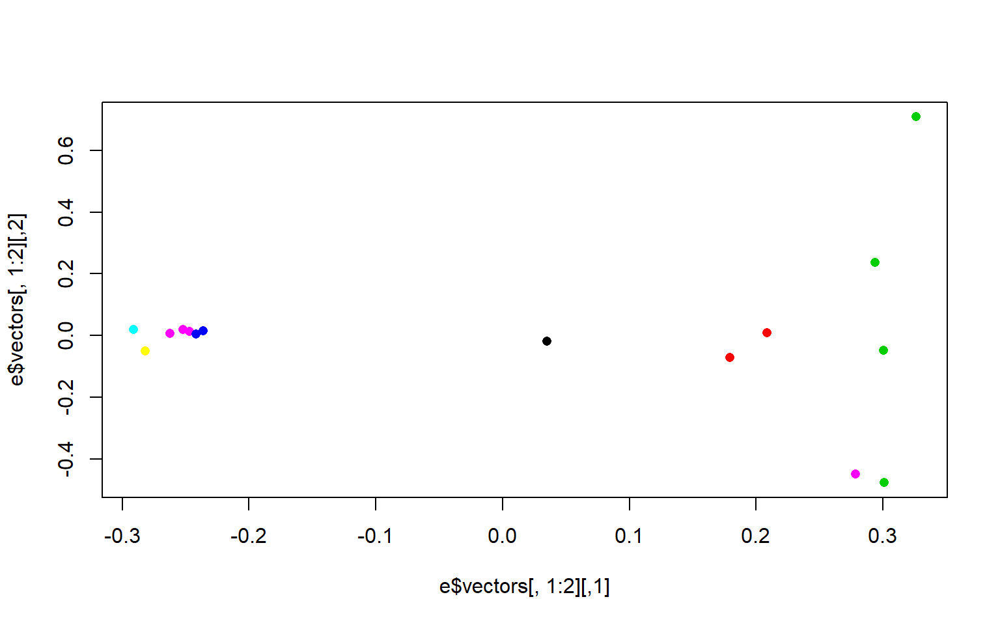
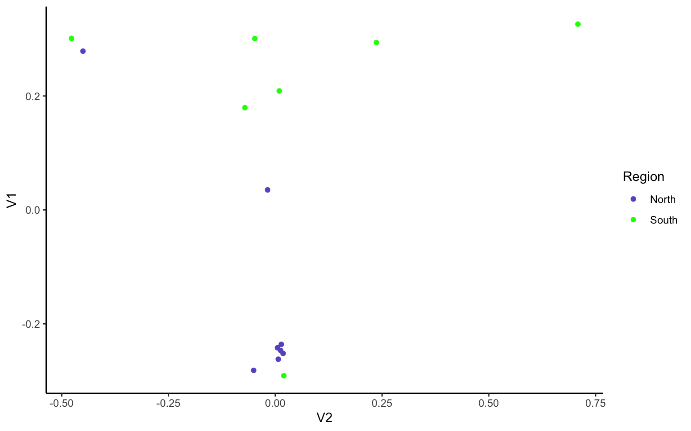

8 Week 6- Principle Component Analyses
In week 3 we mapped reads to a genome so we could call our genetic variants (SNPs) and generated bam files for each read file (= sequence data from an individual). Last week we started investigating population structure with structure plots via conStruct. We will now use these SNPs to plot patterns of population structure in a different way with principal component analyses.
The first portion of this lesson will be performed in bash and then we will generate the plots in RStudio.
8.1 Download the data
We first need to download the data. Use the link below to download it to jetstream, and then us the tar command to un-compress it.
wget https://raw.githubusercontent.com/BayLab/MarineGenomicsData/main/Week7_2022.tar.gz
tar -xzvf Week7_2022.tar.gzOur data this week consists of genotype_likelihood files in beagle format and a bam.filelist which contains id information for our samples.
ls -lh MarineGenomicsData/Week78.2 Installing programs
We will also need to install a few programs. The code below installs the program pcangsd, and a few dependencies for pcangsd:
#install pip for python
curl https://bootstrap.pypa.io/get-pip.py -o get-pip.py
python3 get-pip.py
#we need to add our home directory to the path for pip
#look at path
echo $PATH
#add the location of pip to our path
export PATH="$HOME/.local/bin:$PATH"
#then install pcangsd
git clone https://github.com/Rosemeis/pcangsd.git
cd pcangsd/
python setup.py build_ext --inplace
pip3 install -e .Check that it’s installed correctly.
#navigate to your home directory
cd
python3 pcangsd/pcangsd/pcangsd.py -hYou should see the help menu for pcangsd.
8.3 Run pcangsd on our data
In population genomics analyses we often use multiple programs, which often have different input file formats. This is again why writing out the input/output formats in a pipeline is very useful! Have a look at the pcangsd website and see what type of input is needed.
cd
cd home/exouser/Week7
pcangsd --beagle /home/exouser/Week7/genolike_beagle.beagle.gz -o pca_out --threads 28
This will generate a covariance matrix output file (the "*.cov" file). We can read this file into R and compute the eigenvectors and eigenvalues and make our plot.
8.4 Setting up a new project in R
We’ll first open a new .R script to keep track of our code and everything that we’re doing. Be sure to comment heavily with #. It may seem obvious what we’re doing now, but you will forget what certain lines of code do in a surprisingly short amount of time.
8.5 Reading data into R
There are several ways to read data in R. Useful functions include read.table(), getwd(), and setwd()
R like many other programs is set to start in a specific direcotory, usually the desktop or homw directory. You can check and see what directory R is set in with the command getwd()
And of course all of this code is typed into our script and commented along the way.
#check working directory
#getwd()
#should output
#[1] "/home/exouser/Week7"Thus in jetstream the working directory is set to our home directory, which will work fine for uploading data. If you need to change the directory you can use setwd() and provide it with the full directory path and then confirm that it moved the directory with getwd().
In Rstudio you can also use the pull down menus Session to get and set your working directory. Similarly, the tab Files in the lower right will also allow you to set your working directory.
Now we’ll read the data output by angsd into R using read.table() and as.matrix()
cov<-as.matrix(read.table("pca_out.cov"))And then we can compute the eigenvalues from our covariance matrix with the function eigen.
e<-eigen(cov)And make a simple plot in base R
plot(e$vectors[,1:2])
We may be interested in how much of the variance our first two components explain. You can look at this in the e object under values. We divide the eigen values by the sum of all the values to get the percent explained by each value.
e$values/sum(e$values)
## [1] 0.24278761 0.07662213 0.07502757 0.07349541 0.07287943 0.07034540
## [7] 0.06674509 0.06530546 0.05280345 0.04958515 0.04274839 0.03706328
## [13] 0.03527164 0.03241500 0.00690499We now want to make the colors match population labels. The information on which population each individual sample came from is in the bam.filelist file (second column).
#read in the data
names<-read.table("bam.filelist")
#assign the rownames of the covariance matix the
rownames(cov)<-names$V2#remake the plot with the colors we want
plot(e$vectors[,1:2], col=as.factor(rownames(cov)), pch=16)
There is another column in the bam.filelist file that will allow us to color the populations based on region (i.e. regions a or b). Go ahead and modify your plots to have nice x and y labels that state the percent variance explained by each axis, and that are colored by region. You can also change the pch and any other parameters you would like.
8.6 Group Exercises
In the following 2 exercises, we will again work in groups to re-create our PCAs, but with the stricter SNP filtering parameter of only allowing variant sites with data present for all 15 individuals.
Filtering genomic data is a bit of an art, as filtering more will allow for higher confidence in our SNPs, but will also likely lead us to remove true SNPs from the dataset thinking they are instead sequencing/mapping errors. Here, we are going to see if/how using a stricter filter changes our population structuring.
Start by creating a new R file (File -> New File -> R Script), save it as Week7.exercises.R. In this R file, write the code that you will use for each step of the exercises below. Make sure you use ‘#’ before each line of code explaining what you are doing (anottated code = happy coder)!
1.1) In R, upload the genotype likelihood maf file (genolike.beagle.maf.gz).
Hint: the read.table() command may give an error since the file is zipped. Google how to use the R command read.table() with a gzfile to read the ‘maf.gz’ file. We will also want to keep the first row as a header - google the command or type ‘?read.table’ into R to figure out how to keep the first line as variable names.
Explore this .maf file- what are the columns and rows telling us? Which column can tell us the number of individuals each SNP has data for?
Hint: have a look at this webpage to see the output format explanation
1.2) Filter the data so that we only use sites in which all 15 individuals have data present (i.e., subset by the column of interest from 1.1). Save this filtered dataset as an object called “gen_filt.” How many SNPs does this leave us? How does it compare to the number of SNPs of the unfiltered dataset?
Hint: you can look at section 5.8 of week 4 on subsetting in R.
2.1) Use the filtered file from exercise 1 in pcangsd to recalculate the covariance matrix and regenerate the pca plot. Can we use our gen_filt dataframe as an input file for pcangsd?
Read the original input file (genolike_beagle.beagle.gz) in R and see how the column names compare between it and our filtered .maf file.
2.2) We see that we need to change the column names of gen_filt to match the beagle format. Here we can use the function
merge(x, y, by = ). Again, you can use ‘?merge’ in R for more info on this command.
Note: the function merge only works (properly) if the column names are the same.
Change the column names to match across the two dataframes where they have the same info. To do this, first create a new column gen_filt called “marker,” where we will paste columns $chromo and $position as a single character separated by "_". Have a look here on how to do this.
Then use merge command by the column “marker,” calling this new object ‘beag_filt.’ Check how many columns and rows are in this object.
2.3) Pcangsd doesn’t want those extra columns that came from our merge lets get rid of them to leave the 48 columns that beagle needs. Use the “RC cola” notation to subset the dataframe, keeping only the first column and then columns 9-55.
2.4) Use the “write.table” command to save our beagle file as the new input for pcangsd. Save the output as “geno_like_filt.beagle.”
Hint 1: By default write.table outputs a dataframe with row names, and we dont want that. Search how to have row names as False in the write.table command.
Hint 2: The beage file will also require columns being separated by tabs. Search how to tab separate write.table outputs, and include that as well in the command.
2.5) We should now have our filtered beagle file in our R session directory. Let’s move back into terminal to run pcangsd again!
First gzip the file (‘gzip geno_like_filt.beagle’), then re-run the pcangsd command. Check your directories to make sure the input and output files are there.
2.6) Then we can go back to R and rerun our code to calculate the eigenvalues and eigenvectors for this covariance matrix. How does the plot compare to the non-filtered dataset? How much of the variance do the first 2 PCs explain in this filtered dataset?
8.7 Additional Exercise
Remake the base R plot that we generated in class in ggplot. Use the group parameter in aes to group by region and/or population. Note, ggplot wants the data to be a dataframe and our data is a matrix. Use the function
as.data.frame(e$vectors)to acheive this in the ggplot function. Don’t forget to load the ggplot2 package with `library(ggplot2)’
Solution
# we need to use the function as.data.frame to make our matrix a dataframe.
M<-as.data.frame(e$vectors[,1:3])
library(ggplot2)
ggplot(data=M, aes(y=V1, x=V2, group=as.factor(names$V3), color=as.factor(names$V3)))+
geom_point()+
theme_classic()+
scale_color_manual(name="Region",
labels = c("North",
"South"), values =
c("a"="slateblue",
"b"="green")) 
#read in genotype likelihood data and filter by all individuals
gen<-read.table(gzfile("genolike_beagle.mafs.gz"), header=T)
#filter by nind == 15
gen_allIND<-gen[gen$nInd==15,]
#find how many SNPs we had in the first dataset
dim(gen)
## [1] 282950 7
#[1] 282950 7
#how many do we have in the filtered dataset?
dim(gen_allIND)
## [1] 31905 7
#[1] 31905 7